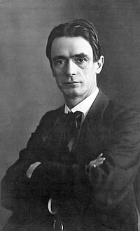

“O nosso maior objetivo deve ser o de desenvolver seres humanos livres, capazes por si próprios, de imprimir propósitos e direção às suas vidas.”
-Rudolf Steiner
Pedagogia Waldorf
A Associação Travessia trabalha com a Pedagogia Waldorf, que busca o desenvolvimento integral e harmonioso de todas as capacidades da criança como ser físico, psíquico, social e espiritual. O currículo Waldorf procura um equilíbrio sadio entre conteúdos conceituais, atividades artísticas e atividades corporais. Valorizando, assim, integração social, cooperação, integração de escola e família, arte, movimento, imaginação e criatividade. Apesar de seguir os princípios básicos da Antroposofia, o currículo Waldorf não é rígido: ele varia de acordo com a cultura e a legislação do país no qual a escola está inserida.

Rudolf Steiner
Educação Terapêutica
A Associação Travessia trabalha com a Pedagogia Waldorf, que busca o desenvolvimento integral e harmonioso de todas as capacidades da criança como ser físico, psíquico, social e espiritual. O currículo Waldorf procura um equilíbrio sadio entre conteúdos conceituais, atividades artísticas e atividades corporais. Valorizando, assim, integração social, cooperação, integração de escola e família, arte, movimento, imaginação e criatividade. Apesar de seguir os princípios básicos da Antroposofia, o currículo Waldorf não é rígido: ele varia de acordo com a cultura e a legislação do país no qual a escola está inserida.
Terapia Social
A Associação Travessia trabalha com a Pedagogia Waldorf, que busca o desenvolvimento integral e harmonioso de todas as capacidades da criança como ser físico, psíquico, social e espiritual. O currículo Waldorf procura um equilíbrio sadio entre conteúdos conceituais, atividades artísticas e atividades corporais. Valorizando, assim, integração social, cooperação, integração de escola e família, arte, movimento, imaginação e criatividade. Apesar de seguir os princípios básicos da Antroposofia, o currículo Waldorf não é rígido: ele varia de acordo com a cultura e a legislação do país no qual a escola está inserida.
Terapia Individual
A Associação Travessia trabalha com a Pedagogia Waldorf, que busca o desenvolvimento integral e harmonioso de todas as capacidades da criança como ser físico, psíquico, social e espiritual. O currículo Waldorf procura um equilíbrio sadio entre conteúdos conceituais, atividades artísticas e atividades corporais. Valorizando, assim, integração social, cooperação, integração de escola e família, arte, movimento, imaginação e criatividade. Apesar de seguir os princípios básicos da Antroposofia, o currículo Waldorf não é rígido: ele varia de acordo com a cultura e a legislação do país no qual a escola está inserida. Durante os três primeiros anos da escola, a criança gosta do movimento, de ritmo e de rimas. O desenvolvimento da escrita partindo de imagens e histórias, de maneira artística.